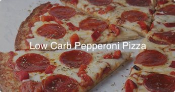
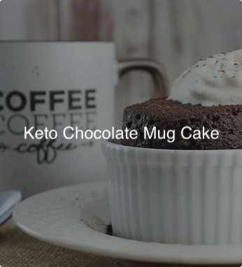

Ketogenic Recipes for you to try
Shifting to a low-carb lifestyle has never been easier when you can eat food that you thought you'd miss.



A ketogenic diet is a low carb, high fat diet that turns your body into a fat-burning machine. When insulin - the fat storing hormone - levels drop, you will feel the difference of an optimal body. Keto has many weight loss, health and performance benefits for type 2 diabetes, epilepsy, PCOS, metabolic syndrome, blood pressure, cholesterol, mental focus and numerous autoimmune diseases.
Keto restricts your intake of sugar and starchy foods, like pasta and bread. Instead, you'll eat delicious real food with selective protein, healthy fats, and vegetables for nutrients. Ruled.me contains everything you need - what to eat, what to avoid, and exactly how to do it.
The “keto” in a ketogenic diet comes from the fact that it allows the body to produce small fuel molecules called “ketones”.2 This is an alternative fuel source for the body, used when blood sugar (glucose) is in short supply.
Ketones are produced if you eat very few carbs (that are quickly broken down into blood sugar) and only moderate amounts of protein (excess protein can also be converted to blood sugar).
The liver produces ketones from fat. These ketones then serve as a fuel source throughout the body, especially for the brain.
The brain is a hungry organ that consumes lots of energy every day, and it can’t run on fat directly. It can only run on glucose… or ketones.3
On a ketogenic diet, your entire body switches its fuel supply to run mostly on fat, burning fat 24-7. When insulin levels become very low, fat burning can increase dramatically. It becomes easier to access your fat stores to burn them off.5 This is great if you’re trying to lose weight, but there are also other less obvious benefits, such as less hunger and a steady supply of energy. This may help keep you alert and focused.
When the body produces ketones, it enters a metabolic state called ketosis. The fastest way to get there is by fasting – not eating anything – but nobody can fast forever.
A keto diet, on the other hand, can be eaten indefinitely and also results in ketosis. It has many of the benefits of fasting – including weight loss – without having to fast.
In its 2016 report “Healthy Eating Guidelines & Weight Loss Advice,” the Public Health Collaboration, a U.K. nonprofit, evaluated evidence on low-carbohydrate, high-fat diets. (The Keto diet falls under the LCHF umbrella.) Among 53 randomized clinical trials comparing LCHF diets to calorie-counting, low-fat diets, a majority of studies showed greater weight loss for the Keto-type diets, along with more beneficial health outcomes. The collaboration recommends weight-loss guidelines that include a low-carbohydrate, high-fat diet of real (rather than processed) foods as an acceptable, effective and safe approach.
A small Feb. 20, 2017, study looked at the impact of a six-week ketogenic diet on physical fitness and body composition in 42 healthy adults. The study, published in the journal Nutrition & Metabolism, found a mildly negative impact on physical performance in terms of endurance capacity, peak power and faster exhaustion. Overall, researchers concluded, “Our findings lead us to assume that a [ketogenic diet] does not impact physical fitness in a clinically relevant manner that would impair activities of daily living and aerobic training.” The “significant” weight loss of about 4.4 pounds, on average, did not affect muscle mass or function.
Shifting to a low-carb lifestyle has never been easier when you can eat food that you thought you'd miss.